A compander is a tool that amplifies a signal with a variable gain, depending on the signal's measured amplitude. The term is a contraction of ``compressor" and ``expander". A compressor's gain decreases as the input level increases, so that the dynamic range, that is, the overall variation in signal level, is reduced. An expander does the reverse, increasing the dynamic range. Frequently the gain depends not only on the immediate signal level but on its history; for instance the rate of change might be limited or there might be a time delay.
By using Fourier analysis and resynthesis, we can do companding individually on narrow-band channels. If 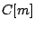 is one such band, we apply a gain 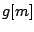 to it, to give 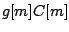. Although is a complex number, the gain is a non-negative real number. In general the gain could be a function not only of but also of any or all the previous samples in the channel: 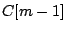, 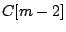, and so on. Here we'll consider the simplest situation where the gain is simply a function of the magnitude of the current sample: 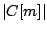.
The patch diagrammed in Figure 9.8 shows one very useful
application of companding, called
a
noise gate. Here the gain depends on the channel amplitude
and a noise floor which is a function  of the channel number
of the channel number  .
For clarity we will apply the frequency subscript
.
For clarity we will apply the frequency subscript  to the gain, now
written as 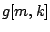, and to the windowed Fourier transform
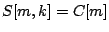.
The gain is given by:
to the gain, now
written as 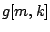, and to the windowed Fourier transform
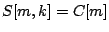.
The gain is given by:
In the figure, the gain is computed as a thresholding function of the ratio 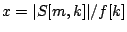 of the signal magnitude to the noise floor; the threshold is 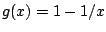 when 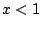 and zero otherwise, although other thresholding functions could easily be substituted.
This technique is useful for removing noise from a recorded sound. We either measure or guess values of the noise floor . Because of the design of the gain function , only amplitudes which are above the noise floor reach the output. Since this is done on narrow frequency bands, it is sometimes possible to remove most of the noise even while the signal itself, in the frequency ranges where it is louder than the noise floor, is mostly preserved.
The technique is also useful as preparation before applying a non-linear operation, such as distortion, to a sound. It is often best to distort only the most salient frequencies of the sound. Subtracting the noise-gated sound from the original then gives a residual signal which can be passed through undistorted.